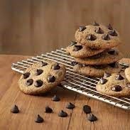
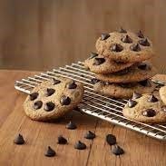

Ingredientes
- 1/2 xícara (chá) de manteiga derretida (100 g)
- 1/2 xícara (chá) de açúcar mascavo
- 1/2 xícara (chá) de açúcar mascavo
- 1 ovo
- 1/2 colher (chá) de essência de baunilha
- 1/2 colher (chá) de essência de baunilha
- 1/2 colher (chá) de fermento em pó
- 100 g de Gotas de Chocolate ao Leite
Modo de Preparo
- Em um recipiente, misture bem com uma colher ou fuê a manteiga, o açúcar mascavo, açúcar, o ovo e a essência de baunilha até obter uma mistura cremosa e clara. Acrescente a farinha de trigo, o fermento em pó e metade das Gotas de Chocolate ao Leite.
- Leve à geladeira por 10 minutos.
- Modele os cookies com o auxílio de 2 colheres e coloque em uma assadeira, deixando um espaço entre eles.
- Finalize com as Gotas de Chocolate restantes e leve ao forno médio (180°C), preaquecido, por cerca de 12 minutos ou até dourar levemente nas laterais.
- Deixe esfriar e sirva.
COOKIES
Você sabia que a palavra cookie vem do alemão, koekje, que significa “pequeno bolo”? Ganhou esse nome porque era, naquele tempo, feita a partir da massa de um bolo e usada para testar a temperatura do forno antes de colocar o bolo inteiro para assar, minimizando os erros. Foram os britânicos que descobriram a bolachinha e acharam que combinaria com seu tradicional chá.


Você sabia que: Os cookies com gotas de chocolate foram inventados pela americana Ruth Wakefield, em 1930.
 
